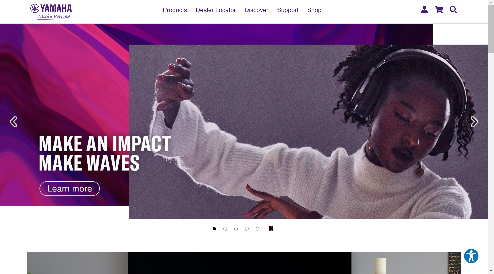
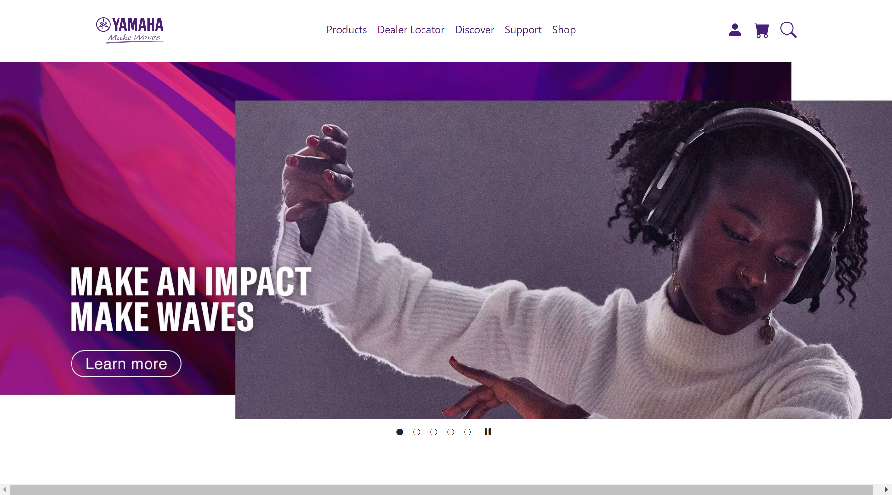

After using Bootstrap 5 for about a week now, I can officially say that it is very difficult. That itself, isn’t that crazy, but after a week of learning raw HTML and CSS, that is nowhere easy either, for different reasons.
Using HTML is probably the most tedious and frustrating thing ever. Everything is meticulously placed in a way where every adjustment is made down to the pixel. That is frustrating. However, despite the pains this causes, this forces you to have more control over what you code. Due to this, everything on the UI is placed with purpose. It’s not easy, but it definitely creates a product that is just the way you want it.
Learning a UI Framework is not easy. I’m still having so many issues about how many divs and containers I use. Similarly to HTML, small things can ruin the entire webpage. So if that’s the case, why spend the time using UI Frameworks when HTML is just as difficult, but makes similar products?
I’m sure that as someone who has only been practicing UI for one week, I’m probably not as qualified to give an answer, but even after using Bootstrap 5 for one week, it’s pretty clear to me that UI Frameworks, despite the difficulty, make the process so much less tedious. It’s true that learning UI Frameworks is like learning an entirely new programming language, but it simplifies the process enough to where, even though it can be frustrating, it doesn’t take hours to make the necessary changes.
Here’s a comparison between two:


The first image is Yamaha’s original website. The second image is a copy I created in Bootstrap in one hour and a half. Even though some of it was frustrating, I can say that the amount of time spent using and practicing Bootstrap 5 is more than worth it in the long run. Sure it’s like learning an entirely new language, but the benefits are better in the long term, which I belive makes it better overall.